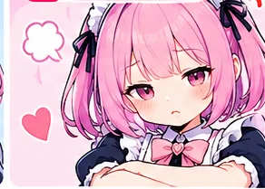

📘 第1段階 FXの基礎｜第8回 / 20回
押し目買い
上昇の途中の一時的な下げを考える

🎀 ルナと学ぼう！
今日は「押し目買い」だよ。むずかしい言葉も図を見ながら覚えていこう！
① まず覚えること
上昇トレンド中の一時的な下落を押し目という。
上昇中にいったん下げて、以前の支持帯などから再び上がる形が代表例。ただし反発は保証されないよ。
② 図で見比べよう
下の図は理解のための模式図。実際のチャートはもっと複雑だよ。
上昇中の一時的な下落
形を比べて、どこで流れが変わるか見てみよう。
山と谷をゆっくり追ってみようね！
下落へ変わる可能性
形を比べて、どこで流れが変わるか見てみよう。

山と谷をゆっくり追ってみようね！
③ 実際のチャートでの見方
- 最初に大きな流れを見て、上昇・下降・レンジを区別する。
- 高値・安値の切り上げが続くか観察。
- 1つの情報だけで決めず、他の根拠と食い違わないか確認する。

⚠️ ルナの注意ポイント
押し目に見えても下落転換する場合がある。
④ 理解度チェック 🌟
さあ、クイズ！正しい説明を選んでね。
第8回「押し目買い」で、まず覚えたいことはどれ？
🌸 今日のまとめ
上昇トレンド中の一時的な下落を押し目という。実際のチャートでも繰り返し探してみよう！
この教材は学習用で、売買の推奨や利益を保証するものではありません。FXには元本を超える損失が生じる場合があります。